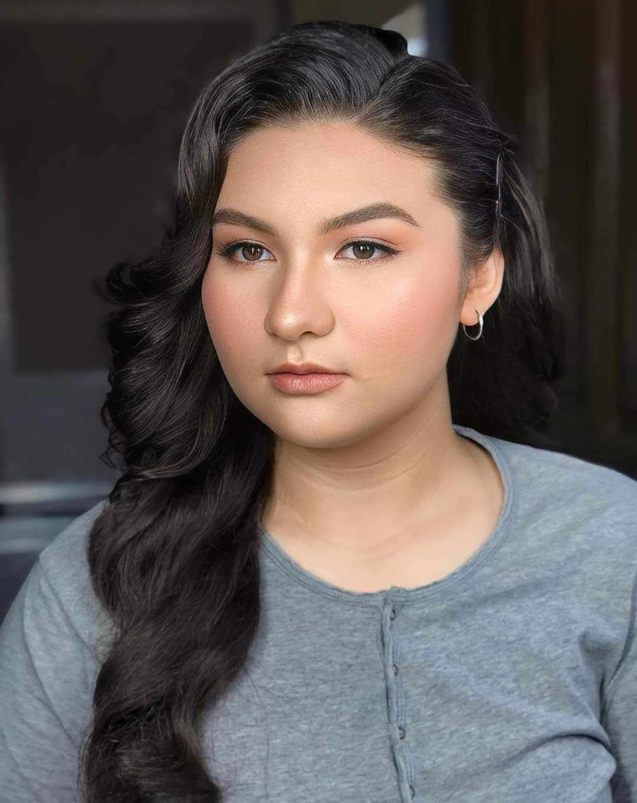
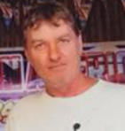

|

|

|
|
|
Nathelie F. Stanton
My sister is my closest friend and she is probably the person who knows me the most.
She’s outgoing, adventurous, and never afraid to speak her mind to humble me.
She is currently a grade 12 student in Vinzons Pilot High School. We share a close bond and often find ourselves enjoying the same activities, like listening to the same music and watching movies together.
Her positive attitude and sense of humor make her such a great person to be around.
|
Robert Stanton
My dad is a calm and patient person who has always been a great role model for me.
He’s now retired but he has spent most of his career in the military as an air force officer.
He enjoys solving problems and loves to share his knowledge and skills with others.
I admire his dedication to family and his ability to stay grounded even in the face of challenges.
He’s someone who values integrity and is always willing to lend a helping hand.
|
Michelle Stanton
My mom is kind, nurturing, and the emotional anchor of our family.
She’s a great listener and always knows how to provide comfort and support.
Growing up, she encouraged me to pursue my dreams and never gave up on me.
She’s a creative spirit, with a passion for cooking, crafting, and gardening.
Her warmth and generosity have always been a constant source of inspiration for me.
|